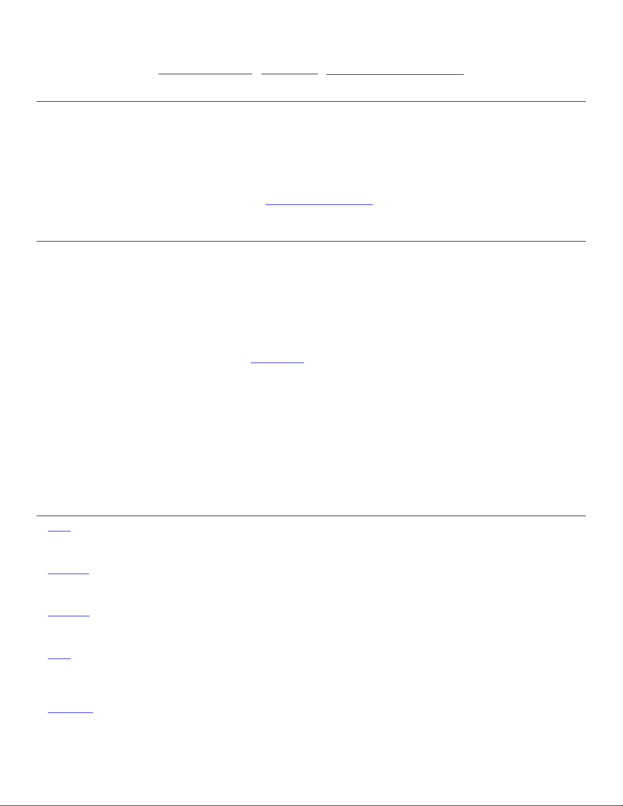

Zeyu (Zayne) Zhang
contact@zeyu2001.com | zeyu2001.com | www.linkedin.com/in/zhang-zeyu
Education
University of Cambridge Oct. 2023 – 2026 (Expected)
B. A. (Hons) in Computer Science Cambridge, England
•
Grade: 1st Class. Top performance in Discrete Maths, Operating Systems, Software & Security Engineering.
•
Cybersecurity Society: Secretary (2024/25) – Represented the University in various international competitions.
∗ 1st place at pwnEd5 finals, hosted by the University of Edinburgh.
∗ 2nd place at the global finals of LakeCTF 2024, hosted by the Swiss Federal Institute of Technology Lausanne.
∗ 3rd place at European finals of CSAW CTF 2023, hosted by New York University.
•
Hughes Hall May Ball Committee – Developed www.hughesmayball.co.uk and managed domain. React · TailwindCSS
•
Hughes Hall IT & Infrastructure Officer (2024). Singapore Society Database Officer (2024/25)
Experience
Open Government Products Jun. 2024 – Present
Software Engineer Intern Singapore
•
Working on the organization’s GitOps access control solution, which replaces previously ClickOps-heavy HR workflows.
•
Shipped a Next.js app to visualize and preview changes to access control policies, reducing human error.
Jane Street, Macquarie Mar. 2024 – Apr. 2024
First-Year Trading & Technology Programme, Technology Spring Insight Programme London, United Kingdom
Cure53 May 2023 – Present
Freelance Security Engineer Berlin, Germany (Remote)
•
Performed 15+ code audits and VAPTs for global clients. Communicated findings to technical & non-technical audiences.
•
Targets included web applications, browser extensions, Electron-based desktop applications, and mobile applications.
TikTok Apr. 2023 – Sep. 2023
Security Engineer Intern Singapore
•
Discovered 50+ security vulnerabilities affecting critical internal and external facing services, such as TikTok.
•
Developed Java extension on Burp Suite’s new Montoya API for testing protobuf over both WebSockets and HTTP(s), a
feature not supported by any open-source extension at the time of development.
•
Wrote and deployed to K8s a deliberately vulnerable application in React.js and Express.js used as part of an internal
competition.
•
Researched at scale: Protobuf over WebSockets, XSS filter bypasses, and rich text editor vulnerabilities.
•
Weaponised a 0-day in an online word processor to harvest employee credentials in a red team operation.
Hackathons & Projects
Echo | Next.js · TailwindCSS · Vercel · Reddit, Twitter API + OAuth
•
Most Promising AI x Web3 Build, 1st Prize @ Encode Club London AI Hackathon 2024
•
Social media aggregator that provides personalised feed for users to regain control of their social media algorithms.
EduAble | Next.js · TailwindCSS · PostgreSQL · Vercel · OpenAI API
•
2nd Place @ Cambridge Generative AI Hackathon 2024, Finalist @ Fitzelerate 2024
•
STEM notetaking app with real-time audio transcription to Markdown & LaTeX, and AI-generated summaries & quizzes.
Ambrose | TypeScript · React · TailwindCSS
•
1,200+ downloads.
•
Chrome extension that automatically answers trivia questions and reminds users of pending trivia quizzes in an online game.
Zeno | TypeScript · Express.js
•
Finalist @ STACK the Codes Hackathon 2022
•
Security middleware for Express.js that protects against injection attacks, application-level DoS, SSRF and IDOR
vulnerabilities.
Charlotte | Flask · PostgreSQL · React
•
Most Impactful Award @ Tech For Good Festival 2021
•
Chrome extension that helps people with disabilities and the elderly to navigate the web with ease by providing accessibility
improvements.